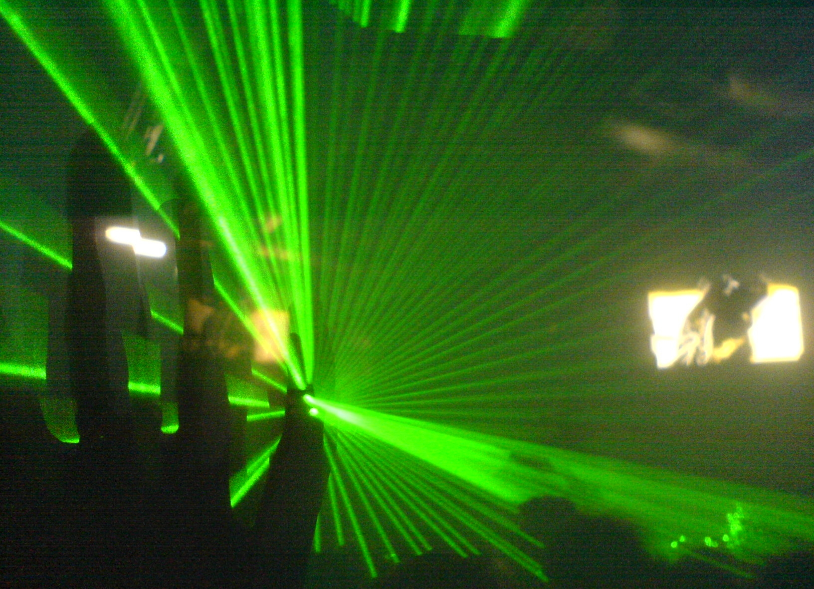

Projects
Can we help House MD – Genomics in medicine
 Would you buy the same clothes as your grandmother? Probably not. But why is it that when you get sick, you’re likely to receive just about the same treatment and drug choices? And so will everyone else. That’s because even the world’s best scientists and doctors have limited knowledge of how different people respond to different treatments. The result is a "one size fits all" approach to medicine. That’s now changing. Personalized medicine is moving us closer to more precise, predictable and powerful medicine—customized for the individual patient. Our growing understanding of genetics is allowing us to provide better diagnoses, safer drug prescriptions, and more effective treatments of diseases and conditions that have affected us throughout history. Today, scientists and doctors are learning how to tailor health care to a person’s unique genetic makeup. By developing personalized medicine we hope to avoid many side effects of inappropriate treatments and shorten the overall duration of treatment.
Would you buy the same clothes as your grandmother? Probably not. But why is it that when you get sick, you’re likely to receive just about the same treatment and drug choices? And so will everyone else. That’s because even the world’s best scientists and doctors have limited knowledge of how different people respond to different treatments. The result is a "one size fits all" approach to medicine. That’s now changing. Personalized medicine is moving us closer to more precise, predictable and powerful medicine—customized for the individual patient. Our growing understanding of genetics is allowing us to provide better diagnoses, safer drug prescriptions, and more effective treatments of diseases and conditions that have affected us throughout history. Today, scientists and doctors are learning how to tailor health care to a person’s unique genetic makeup. By developing personalized medicine we hope to avoid many side effects of inappropriate treatments and shorten the overall duration of treatment.
In this project every participant will get a “patient” – medical history of a patient for whom the diagnosis could not be established buy using standard medical procedures, and a genotype – complete DNA sequence derived from that person. By combining this information we will try to get better predictions of diseases our patients are suffering from. In order to be able to do this, participants will learn how to deal with genomic data, search the databases for information about diseases and perform a bit of R coding.

Dunja Vučenović
University of Zagreb, Croatia
Dunja Vucenovic is a Master student of Molecular biology at Faculty of Science in Zagreb. During her studies she got interested in different OMICs approaches. Her S3 story began while she was still in the elementary school and since then she was a participant for 4 years in a row. Last year, Dunja joined the Society for Out of Frame Education and she has organized several workshops for the Science Picnic festival. In her free time she enjoys cooking and experimenting with different cuisines, travelling and wandering in nature.
Biomolecular architecture: why some proteins have additional domains?
 Genetic information is often said to be kept in form of DNA molecules. More specifically, every DNA molecule is built out of nucleotides and the important information arises from their sequence. In every cell, this sequence is transcribed in a form of mRNA molecule, which is further used for protein synthesis enabled by the activity of ribosomes. Hence, genetic information given by nucleotide sequence of mRNA molecules is translated into protein amino acid sequence. tRNA molecules also participate in a translation process as adaptor molecules that bring the corresponding amino acids to ribosomes. Faithful transmission of genetic information is ensured through the activity of enzymes that attach amino acids to cognate tRNA molecules. Some of these enzymes are found to be involved in a formation of human diseases (eg. neuronal pathologies), making a detailed investigation of these proteins of exceptional importance.
Genetic information is often said to be kept in form of DNA molecules. More specifically, every DNA molecule is built out of nucleotides and the important information arises from their sequence. In every cell, this sequence is transcribed in a form of mRNA molecule, which is further used for protein synthesis enabled by the activity of ribosomes. Hence, genetic information given by nucleotide sequence of mRNA molecules is translated into protein amino acid sequence. tRNA molecules also participate in a translation process as adaptor molecules that bring the corresponding amino acids to ribosomes. Faithful transmission of genetic information is ensured through the activity of enzymes that attach amino acids to cognate tRNA molecules. Some of these enzymes are found to be involved in a formation of human diseases (eg. neuronal pathologies), making a detailed investigation of these proteins of exceptional importance.
In this project, one of the enzymes catalyzing covalent bond formation between the amino acid and tRNA molecule is going to be further explored. Experimental part of the project is going to begin by growing genetically modified bacteria that produce large quantites of the abovementioned protein. This protein is going to be purified from all other bacterial proteins and its affinity to tRNA is going to be determined. Experimental findings are further going to be supported by computational analyses by which we are going to simulate the movement of our protein. In other words, the molecular interactions from the experimental part are going to be investigated using the molecular dynamics data at the atomic level.

Nikolina Sostaric
University of Zagreb, Croatia
Nikolina is a 5th year student of Chemistry at Faculty of Science in Zagreb. She participated in Summer School of Science 2013 (S3++ camp) as a swapshop leader. Nikolina also volunteered in the student project Magic in Science and currently works as a student mentor in the Fifth Gymnasium in Zagreb. She is interested in enzyme kinetics, molecular simulations and statistical analysis of biological data. In her free time, Nikolina enjoys reading, cooking and painting.
Constructing a laser video display
In principle, laser displays are simple: they consist of a laser which fires onto two mirrors; one mirror vibrates on a horizontal axis, and the other vibrates on a vertical axis. This makes the laser beam scan across a screen. By turning the laser on and off at the right times, you can draw any picture you like. Take red, green, and blue lasers, and you have your own color TV! In practice, things are never that simple. How do you build and control the mirrors, which must vibrate at extremely high rates? How do you synchronize between the mirrors and the lasers? How do you actually combine colors? Answer these questions, and you'll be able to manufacture tiny yet powerful handheld projectors, a growing and important field in the display industry.
In this project, we will build a basic laser video display using only commonly found household items such as laser pointers and speakers. While not quite supporting HD resolution, the display will be able to show primitive shapes and pixels, and will be controlled through a computer and an Arduino microcontroller (a small external computer than can easily be programmed to interact with hardware). Building such a device requires diving into basic optics and fundamentals of oscillations, resonance and acoustics. Signal processing will also come into play. We will have to overcome a number of structural challenges; glue, nails, and soldering is to be expected. In the end, we will have combined theory and practice to build a machine that demonstrates important principles in display technology.

Renan Gross
Technion – Israel Institute of Technology, Israel
Renan Gross is currently finishing his undergraduate degree in mathematics and physics at the Technion - Israel Institute of Technology. He is interested in all fields of science, from mathematics and computers to physics, informatics and biology. During his spare time he writes about science, politics and life, plays the piano, and occasionally performs poetry. Renan mentored thrice in the Summer School of Science: as a swapshop leader in 2011, and as a project leader in 2012 and 2013.
Speech recognition: some SIRIous business
 "Hey Siri, find me some summer schools in Europe!" might have led you here. Your mobile personal assistant who understands your voice makes interacting with a machine very natural. This is how it should be: computers are meant to make certain tasks easier for humans. In order to to this, the machines must not only be able to help with the task at hand, but communicating with it should also be easy. The first computers did not have keyboards nor screens, input had to be provided by connecting wires in a certain way. But we have come a long way since then. Now, apart from keyboard, screen and mouse, we can use touch, 3D camera's and even voice control to interact with our computers.Speech recognition still feels like science fiction, but is really making its entrance in our world. It is best known from Siri and Google Now, our mobile personal assistants. But it is also used to (partially) replace call centers, for automatic subtitling and automatic translation. Automatic translation makes a conversation possible between people who do not speak the same language: The computer interprets spoken languages, translates it and says it in the target language.
"Hey Siri, find me some summer schools in Europe!" might have led you here. Your mobile personal assistant who understands your voice makes interacting with a machine very natural. This is how it should be: computers are meant to make certain tasks easier for humans. In order to to this, the machines must not only be able to help with the task at hand, but communicating with it should also be easy. The first computers did not have keyboards nor screens, input had to be provided by connecting wires in a certain way. But we have come a long way since then. Now, apart from keyboard, screen and mouse, we can use touch, 3D camera's and even voice control to interact with our computers.Speech recognition still feels like science fiction, but is really making its entrance in our world. It is best known from Siri and Google Now, our mobile personal assistants. But it is also used to (partially) replace call centers, for automatic subtitling and automatic translation. Automatic translation makes a conversation possible between people who do not speak the same language: The computer interprets spoken languages, translates it and says it in the target language.
In this project we will build our own Siri: a computer program to which we can give spoken commands. In order to achieve this, we first have to understand how computer hear sounds and teach it to map our voices to phones, words and even sentences. Therefore, our first step will be to study some basic techniques of sound processing. Next, we will use machine learning to teach computer to recognize words and sentences. Machine learning will let us to present computer with examples of a task we want to achieve and let it figure it out on its own, instead of programming it for it. We will then conduct experiments to make sure that the learning technique is effective and determine which phones/words/sentences are easy or difficult to recognize for a computer.
Jessa Bekker
KU Leuven, Belgium
Jessa graduated Computer Science at the KU Leuven in Belgium. She is currently a PhD student and teaching assistant at the same institution. Her research is about machine learning, in particular how to make fast predictions. Next to teaching engineering students, she also mentors young programmers by being a CoderDojo coach. In her free time, Jessa likes to spend time with her friends, travel and play the piano.
Do-it-yourself bioreactor design – can we grow microalgae with everyday equipment?
 Many of the products we use every day are made with the help of microorganisms. Think about bread, beer, insulin, biofuels, and much, much more. To make the production as efficient as possible, we have to think about how exactly we need to grow these organisms to make them grow as fast as possible. That is exactly what we do in bioreactor design: we try to make the microorganisms as comfortable as possible so they will grow fast. But not all microorganisms need the same kind of environment. Therefore, we need to test what makes them happy. Do they need a lot of sugar? What pH do they need? Do they need oxygen and how much? What kind of reactor fits best with their needs?
Many of the products we use every day are made with the help of microorganisms. Think about bread, beer, insulin, biofuels, and much, much more. To make the production as efficient as possible, we have to think about how exactly we need to grow these organisms to make them grow as fast as possible. That is exactly what we do in bioreactor design: we try to make the microorganisms as comfortable as possible so they will grow fast. But not all microorganisms need the same kind of environment. Therefore, we need to test what makes them happy. Do they need a lot of sugar? What pH do they need? Do they need oxygen and how much? What kind of reactor fits best with their needs?
In this project we try to answer these questions for fast growing microalgae. Microalgae are unicellular organisms that can grow on light using photosynthesis. Over the last years, there is a lot of attention on microalgae, because they can be used to produce food supplements (eg. carotene) for example and biofuels. First, we will use everything we know about algae to design a bioreactor that suits algae’s needs. After that we will build our own bioreactor and test how we can optimize the production by changing different parameters. At the end of the project we will propose how microalgae can be produced as efficiently as possible.

Marieke Francisca Buffing
ETH Zürich, Switzerland
Marieke studied biotechnology at Wageningen University (in the Netherlands), where she also did her Master’s in process engineering and molecular biotechnology. During her studies she got more and more interested in mechanisms that cells use to adapt to their environment. Now, during her PhD at ETH Zurich, Marieke is trying to find out how bacterial species use different protein-metabolite interactions to make fast decisions when their environment changes. When she is not in the lab, Marieke is mostly in museums or running around in the forest near the campus.
Indoor positioning using Bluetooth
Now that we have more or less perfected outdoor navigation with technologies such as GPS and GLONASS, the logical next step is to map the indoor spaces, as well. Here, the traditional approach using GPS does not work, since the signal is all but lost after going through the building walls and fighting with the local electromagnetic interference. Because of that, new solutions have to be developed, that would help humans, as well as robots, to navigate complex indoor environments such as shopping malls, storage rooms, or even ones own home.
In this project, we will use inexpensive bluetooth beacons at known fixed positions, as well as a smartphone, which will determine its location by measuring the signal strengths from the beacons. Using some signal filtering, and algorithms such as weighted nonlinear least squares fitting, the goal is to achieve near real-time tracking with 1m accuracy, which is comparable to the leading solutions in the field. Additionally, if time permits, we will attempt to use other sensors (magnetometer, compass) to get a more accurate location estimate. Alternatively, instead of the least squares fitting, we can train and use a neural network to get the location from the signal strengths.
Daniel Siladji
University of Primorska, Slovenia
Daniel is studying mathematics at the University of Primorska. However, his interests reach beyond pure mathematics, and encompass areas such as computer science/informatics, physics, and electronics. During his high school years, he attended Petnica Science Center (Serbia), and completed four projects related to these areas. Before settling with science, he spent a large part of his youth playing the piano, and nowadays, he enjoys going to various musical events, both classical and contemporary.